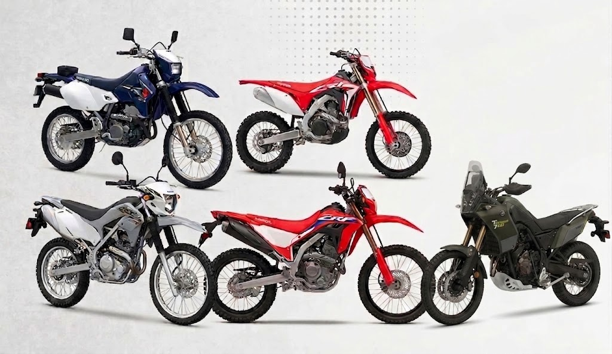
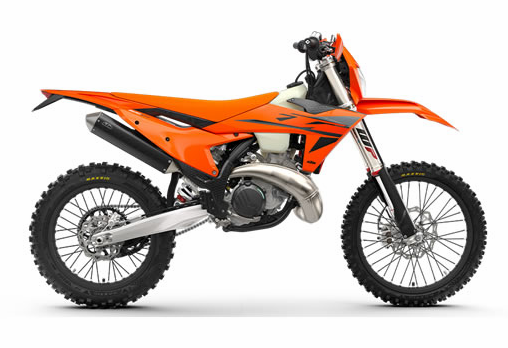
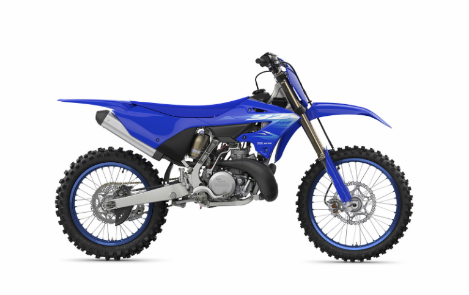
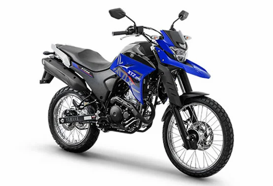
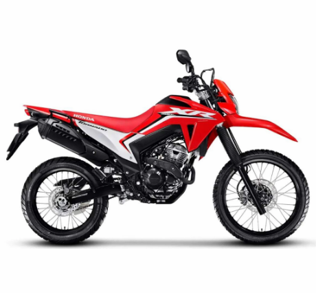

¿Qué es una moto de Enduro y Trail?
Las motos de Enduro y Trail están diseñadas para circular por caminos de tierra, terrenos irregulares y superficies donde una moto urbana tendría mayores dificultades. Son ideales para actividades fuera de la ciudad y recorridos por terrenos naturales.

¿Por qué elegir una moto para Campo / Tierra?
Si tu objetivo es recorrer caminos de tierra, terrenos irregulares o realizar actividades fuera del asfalto, este tipo de motocicleta ofrece características que permiten afrontar estos terrenos con mayor seguridad y facilidad.
Características principales
🛞 Neumáticos. Utilizan neumáticos con dibujos más marcados que proporcionan mayor agarre sobre tierra, piedras y superficies irregulares.
🔧 Suspensión de mayor recorrido. Cuentan con suspensiones preparadas para absorber golpes y desniveles del terreno.
💪 Resistencia. Están construidas para soportar condiciones más exigentes y recorridos por terrenos difíciles.
⚖️ Poco peso y buena maniobrabilidad. Muchas motos de este tipo buscan ser relativamente livianas para facilitar el control en caminos complicados.
👤 ¿Para quién es recomendable?
Este tipo de moto es recomendable para personas que disfrutan de circular fuera del asfalto y buscan una motocicleta capaz de desenvolverse en terrenos irregulares.
- 🌄 Personas que disfrutan del off-road.
- 🚜 Personas que circulan por caminos rurales.
- 🏕️ Amantes de la aventura.
Ejemplos de motos de Enduro y Trail
KTM 300 EXC – Enduro - Moto diseñada para enfrentar terrenos exigentes, senderos y recorridos off-road.

Yamaha YZ250 – Cross - Moto de competición pensada principalmente para circuitos de motocross.

Yamaha XTZ 250 – Doble Propósito - Moto versátil que permite circular tanto por caminos asfaltados como por terrenos de tierra.

Honda XR300L Tornado – Trail - Moto multipropósito preparada para desplazamientos diarios y recorridos fuera del pavimento.
